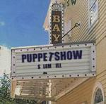

| Artist: | Salem Hill |
| Title: | Puppet Show |
| Label: | Cyclops CYCL 126 |
| Length(s): | 55/55 minutes |
| Year(s) of release: | 2003 |
| Month of review: | [07/2003] |
| 1) | Evil One | 5.11 |
| 2) | Real | 5.47 |
| 3) | Here And Now | 5.36 |
| 4) | Between The Two | 5.57 |
| 5) | Brave New World | 3.28 |
| 6) | The Judgment | 10:00 |
| 7) | Overture/When/Someday | 12.17 |
| 8) | Awake | 6.26 |
disc 2:
| 1) | Golden Crosses | 4.56 |
| 2) | Aceldama | 5.24 |
| 3) | Listen To Me | 8.44 |
| 4) | January | 5.46 |
| 5) | To The Hill | 4.59 |
| 6) | Trigger | 6.23 |
| 7) | Invisible | 11.18 |
| 8) | Waiting For Wonderfulness | 6.51 |
Having said all that (well, written actually): on with the show. Getting across subtleties at a live show is, as always, a bit of a reach. The band appear rather insecure in some of the vocal harmonies, with that taking the punch out of them. This isn't helped by the fact that Groves' voice seems a little on the gentle side for live endeavors (listen to Brave New World and Awake, not the strongest of compositions, anyway), although his use of it compensates quite well. The core of the live performance are the guitar and keys, bringing out the melody with strength for instance on such epic tracks as The Judgment or Overture/When/Someday. And as already breached, the direction of the band starting from their third Catatonia has become markably more progressive. A number of the tracks from before then don't exactly enhance the overall progressiveness of this album.
Closer Waiting For Wonderfulness is a new studio recording, a quiet track led by piano and gentle vocals. The drum sounds on this one are a bit artificial. The tracks flows nicely along, perhaps a bit short of action. Still nice.